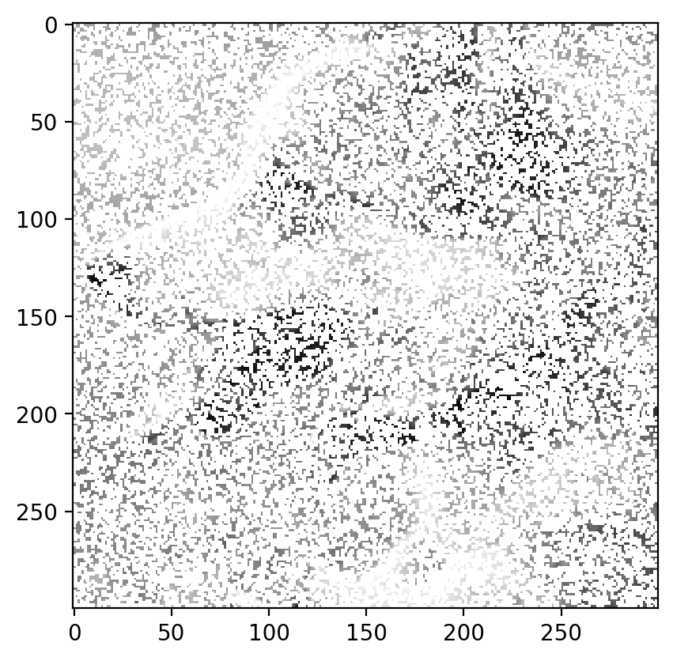

import numpy as np
import matplotlib.pyplot as plt
import pandas as pd
import seaborn as sns
%matplotlib inline
%config InlineBackend.figure_format = 'retina'Movie Recommendation using Matrix Factorization
Movie Recommendation using Matrix Factorization
# Now working with real data
# Load the data
df = pd.read_excel("Movie Recommendation 2024 (Responses).xlsx")
df.head(10)| Timestamp | Your name | Sholay | Swades (We The People) | The Matrix (I) | Interstellar | Dangal | Taare Zameen Par | Shawshank Redemption | The Dark Knight | Notting Hill | Uri: The Surgical Strike | |
|---|---|---|---|---|---|---|---|---|---|---|---|---|
| 0 | 2024-02-06 09:42:36.374 | Srijahnavi | 4.0 | 3.0 | 4.0 | 5.0 | 5 | 4.0 | 4.0 | 5.0 | 4.0 | 5.0 |
| 1 | 2024-02-06 09:42:50.227 | Priya | 3.0 | 3.0 | 3.0 | 4.0 | 4 | 4.0 | 5.0 | 3.0 | 3.0 | 4.0 |
| 2 | 2024-02-06 09:43:05.181 | Pulkit Gautam | 4.0 | 5.0 | 5.0 | 5.0 | 3 | 3.0 | 5.0 | 5.0 | 4.0 | 3.0 |
| 3 | 2024-02-06 09:43:16.138 | Twinkle Devda | 5.0 | 4.0 | 5.0 | 4.0 | 2 | 4.0 | NaN | NaN | NaN | 4.0 |
| 4 | 2024-02-06 09:43:18.300 | Ishika Raj | 5.0 | 5.0 | 4.0 | 5.0 | 5 | 5.0 | NaN | NaN | NaN | NaN |
| 5 | 2024-02-06 09:43:37.950 | Kaushik | 1.0 | 4.0 | 5.0 | 5.0 | 2 | 4.0 | 5.0 | 3.0 | NaN | 4.0 |
| 6 | 2024-02-06 09:43:48.787 | Kajal | 3.0 | 4.0 | NaN | 4.0 | 3 | 5.0 | NaN | NaN | NaN | 4.0 |
| 7 | 2024-02-06 09:43:58.223 | sawan verma | 4.0 | 5.0 | 5.0 | 5.0 | 4 | 4.0 | NaN | 4.0 | NaN | 4.0 |
| 8 | 2024-02-06 09:43:58.698 | Daksh Jain | 5.0 | NaN | 5.0 | 5.0 | 4 | 4.0 | 5.0 | 5.0 | NaN | 4.0 |
| 9 | 2024-02-06 09:44:13.505 | Akshat Pratap Singh | 4.0 | NaN | 5.0 | 5.0 | 4 | NaN | NaN | 5.0 | NaN | 4.0 |
# Discard the timestamp column
df = df.drop('Timestamp', axis=1)
# Make the "Your Name" column the index
df = df.set_index('Your name')
df| Sholay | Swades (We The People) | The Matrix (I) | Interstellar | Dangal | Taare Zameen Par | Shawshank Redemption | The Dark Knight | Notting Hill | Uri: The Surgical Strike | |
|---|---|---|---|---|---|---|---|---|---|---|
| Your name | ||||||||||
| Srijahnavi | 4.0 | 3.0 | 4.0 | 5.0 | 5 | 4.0 | 4.0 | 5.0 | 4.0 | 5.0 |
| Priya | 3.0 | 3.0 | 3.0 | 4.0 | 4 | 4.0 | 5.0 | 3.0 | 3.0 | 4.0 |
| Pulkit Gautam | 4.0 | 5.0 | 5.0 | 5.0 | 3 | 3.0 | 5.0 | 5.0 | 4.0 | 3.0 |
| Twinkle Devda | 5.0 | 4.0 | 5.0 | 4.0 | 2 | 4.0 | NaN | NaN | NaN | 4.0 |
| Ishika Raj | 5.0 | 5.0 | 4.0 | 5.0 | 5 | 5.0 | NaN | NaN | NaN | NaN |
| ... | ... | ... | ... | ... | ... | ... | ... | ... | ... | ... |
| Prince Kumar | 3.0 | 3.0 | 5.0 | 5.0 | 5 | 5.0 | 5.0 | 5.0 | 5.0 | 3.0 |
| Vedanshi Raiyani | 4.0 | NaN | 5.0 | 5.0 | 5 | 4.0 | NaN | NaN | NaN | 5.0 |
| Rathod Vatsalraj | 4.0 | NaN | 4.0 | 5.0 | 5 | 4.0 | 3.0 | 4.0 | NaN | 5.0 |
| Aayush Parmar | 4.0 | NaN | 4.0 | 5.0 | 5 | 5.0 | NaN | 5.0 | NaN | 4.0 |
| Heer | 4.0 | NaN | 4.0 | NaN | 4 | 5.0 | NaN | NaN | 4.0 | 4.0 |
80 rows × 10 columns
df.indexIndex(['Srijahnavi ', 'Priya', 'Pulkit Gautam', 'Twinkle Devda ',
'Ishika Raj ', 'Kaushik', 'Kajal', 'sawan verma', 'Daksh Jain',
'Akshat Pratap Singh ', 'Shah Faisal Khan ', 'Devashish Nagpal',
'Viraj Vekaria ', 'Tamizhanban A G', 'Het Pathak', 'Gaurav Shah',
'Ruchit Jagodara ', 'Hirva Patel ', 'Prathmesh Maharshi ', 'Anura',
'Kishan Ved', 'Kaveri ', 'Kaveri ', 'Tirth Patel ', 'Aditya Mehta ',
'Anshul Mantri', 'Nitin Kumar Singh', 'Thumma Ushasree',
'Joshi Siddharth ', 'Pavan Deekshith Doddi ', 'Yash Bachwana',
'Parag Sarvoday Sahu ', 'Dhakad Bhagat Singh ', 'Shivam Jadhao ',
'Abhishek Mandlik ', 'Guntas Singh Saran', 'Dakshata Bhamare',
'Samyak Gosalia', 'Ruchit Chudasama ', 'Hrishikesh C P', 'Rahul R Pai',
'Basavala Prashant Kumar ', 'Nikhitha', 'Pratik Agrawal',
'Shreyans Jain ', 'Kushagra Jain', 'Gajanan Donge ',
'John Twipraham Debbarma', 'Shataxi Dubey ', 'Divyansh Saini ',
'Farhan Obaid ', 'Sneha Gautam', 'Anay Singh Sisodiya', 'Bhavik Patel',
'Mayur Patil', 'Eshwar Dhande', 'Netram Choudhary ', 'Nishi',
'Tanvi Yadav', 'Ayush Shrivastava', 'Poornima Bhatia', 'Pranjal ',
'Miheer Gautam', 'Apurva Ochawar ', 'Rutwik More', 'Kankshi Komre',
'Manish Kumar Bairwa ', 'Rajkumar Rao', 'Nakul', 'Shrimay ',
'Harsh Gautam', 'Rajat Singh', 'Rahul Kumar ', 'Khush Shah',
'Pratham Sharda', 'Prince Kumar', 'Vedanshi Raiyani ',
'Rathod Vatsalraj ', 'Aayush Parmar ', 'Heer'],
dtype='object', name='Your name')# Get index for user and movie
user = 'Ayush Shrivastava'
print(user in df.index)
# Get the movie ratings for user
user_ratings = df.loc[user]
user_ratingsTrueSholay 5.0
Swades (We The People) 4.0
The Matrix (I) 5.0
Interstellar 5.0
Dangal 3.0
Taare Zameen Par 4.0
Shawshank Redemption 4.0
The Dark Knight 4.0
Notting Hill 3.0
Uri: The Surgical Strike 4.0
Name: Ayush Shrivastava, dtype: float64# Number of missing values
df.isnull().sum()Sholay 11
Swades (We The People) 29
The Matrix (I) 12
Interstellar 9
Dangal 0
Taare Zameen Par 1
Shawshank Redemption 34
The Dark Knight 18
Notting Hill 44
Uri: The Surgical Strike 5
dtype: int64# Generic Matrix Factorization (without missing values)
import torch
import torch.nn as nn
import torch.nn.functional as F
import torch.optim as optim
n_users, n_movies = 20, 10
# A is a matrix of size (n_users, n_movies) randomly generated values between 1 and 5
A = torch.randint(1, 6, (n_users, n_movies), dtype=torch.float)
Atensor([[2., 4., 1., 4., 3., 5., 5., 1., 3., 3.],
[4., 4., 3., 3., 5., 5., 2., 5., 4., 4.],
[5., 4., 5., 5., 3., 5., 4., 2., 2., 5.],
[4., 4., 4., 5., 5., 1., 5., 2., 5., 5.],
[4., 1., 3., 1., 1., 5., 4., 3., 1., 2.],
[4., 4., 4., 1., 3., 3., 3., 2., 4., 2.],
[5., 5., 2., 3., 4., 5., 5., 3., 1., 4.],
[2., 2., 3., 5., 1., 4., 3., 4., 3., 1.],
[1., 5., 4., 1., 1., 2., 5., 1., 5., 1.],
[5., 2., 4., 5., 5., 1., 1., 1., 3., 2.],
[5., 1., 1., 2., 4., 2., 1., 2., 3., 1.],
[4., 3., 4., 3., 1., 1., 3., 1., 5., 2.],
[1., 2., 2., 4., 2., 2., 5., 1., 4., 2.],
[5., 1., 3., 4., 2., 1., 1., 3., 5., 2.],
[1., 1., 4., 2., 2., 4., 1., 1., 2., 1.],
[2., 3., 2., 3., 1., 5., 4., 4., 2., 5.],
[5., 3., 2., 1., 4., 2., 4., 2., 1., 3.],
[1., 1., 4., 2., 2., 5., 1., 5., 1., 4.],
[4., 4., 2., 5., 4., 2., 1., 1., 1., 4.],
[2., 1., 5., 4., 5., 1., 1., 3., 4., 2.]])A.shapetorch.Size([20, 10])Let us decompose A as WH. W is of shape (n, k) and H is of shape (k, n). We can write the above equation as: A = WH
# Randomly initialize A and B
device = torch.device("cuda:0" if torch.cuda.is_available() else "cpu")
r = 3
W = torch.randn(n_users, r, requires_grad=True, device=device)
H = torch.randn(r, n_movies, requires_grad=True, device=device)
A = A.to(device)
# Compute the loss
with torch.no_grad():
loss = torch.norm(torch.mm(W, H) - A)
print(loss)tensor(54.4886, device='cuda:0')pd.DataFrame(torch.mm(W, H).cpu().detach().numpy())| 0 | 1 | 2 | 3 | 4 | 5 | 6 | 7 | 8 | 9 | |
|---|---|---|---|---|---|---|---|---|---|---|
| 0 | 0.960631 | -1.234597 | 1.174818 | -0.999765 | 0.237830 | 1.864976 | 0.519434 | -2.580524 | -1.471387 | 1.041185 |
| 1 | -1.693184 | 2.106399 | -1.939065 | 1.777213 | -0.311487 | -2.602445 | -0.782032 | 3.843017 | 2.235000 | -1.347901 |
| 2 | -0.373823 | -0.533497 | -3.165714 | 2.531494 | -1.678776 | -3.835717 | -2.966169 | 4.234484 | 3.354229 | -1.819774 |
| 3 | -1.075516 | 0.201070 | -1.765967 | 2.490199 | -0.269628 | 1.936088 | -1.048494 | -1.240820 | 0.210037 | 2.161197 |
| 4 | -0.028516 | 0.876004 | 0.319336 | -0.958606 | 0.018494 | -2.818869 | 0.350975 | 2.912241 | 1.006289 | -2.332543 |
| 5 | 3.929151 | -4.633563 | 1.349315 | -3.068743 | -1.491175 | -4.009732 | -1.390210 | 1.449100 | 0.739868 | -3.562217 |
| 6 | -1.950831 | 3.092077 | 0.246755 | 0.349341 | 1.161841 | 1.032322 | 1.628842 | 0.254056 | -0.467370 | 0.669982 |
| 7 | -1.225124 | 1.369778 | -0.976484 | 1.263135 | 0.105235 | 0.015258 | -0.132748 | 0.824387 | 0.589789 | 0.352291 |
| 8 | 0.646952 | -2.270853 | -1.843904 | 1.864861 | -1.266480 | 0.262095 | -2.342429 | -0.683251 | 0.865239 | 0.918603 |
| 9 | -0.309519 | -0.016052 | -0.798890 | 0.911602 | -0.256802 | 0.066911 | -0.598124 | 0.150428 | 0.424447 | 0.347383 |
| 10 | -1.045578 | 1.029558 | -2.822124 | 2.044948 | -1.230573 | -4.984273 | -2.138569 | 5.864424 | 3.681202 | -2.866640 |
| 11 | 0.128450 | -1.060651 | -1.345547 | 1.388591 | -0.762487 | 0.018000 | -1.466290 | -0.088337 | 0.721390 | 0.526260 |
| 12 | 1.445933 | -2.546589 | -2.298972 | 0.876488 | -2.238693 | -5.605257 | -3.362968 | 4.812614 | 3.528094 | -3.492417 |
| 13 | -1.191275 | 2.036852 | 0.135693 | 0.070601 | 0.660995 | -0.078880 | 0.980433 | 0.884253 | 0.019542 | -0.141535 |
| 14 | -0.590049 | -0.299263 | -1.015836 | 1.796072 | -0.074566 | 2.766487 | -0.625911 | -2.431694 | -0.572149 | 2.540270 |
| 15 | 0.594951 | -2.072593 | -1.929149 | 1.796307 | -1.327942 | -0.489602 | -2.391668 | 0.125489 | 1.228985 | 0.360009 |
| 16 | -1.063174 | 0.672462 | -0.509705 | 1.472927 | 0.454481 | 3.283679 | 0.224935 | -2.649924 | -1.041073 | 2.743197 |
| 17 | -0.375825 | 1.380803 | 0.615382 | -0.955502 | 0.409033 | -1.717326 | 0.897264 | 2.011101 | 0.401299 | -1.588789 |
| 18 | 0.801099 | 0.064387 | 1.532918 | -2.159871 | 0.294075 | -1.787647 | 1.003891 | 1.276613 | -0.130776 | -1.963114 |
| 19 | -1.159784 | 0.697462 | -2.304632 | 2.370254 | -0.687441 | -1.199945 | -1.534750 | 2.045854 | 1.820844 | -0.096823 |
pd.DataFrame(A.cpu().detach().numpy())| 0 | 1 | 2 | 3 | 4 | 5 | 6 | 7 | 8 | 9 | |
|---|---|---|---|---|---|---|---|---|---|---|
| 0 | 2.0 | 4.0 | 1.0 | 4.0 | 3.0 | 5.0 | 5.0 | 1.0 | 3.0 | 3.0 |
| 1 | 4.0 | 4.0 | 3.0 | 3.0 | 5.0 | 5.0 | 2.0 | 5.0 | 4.0 | 4.0 |
| 2 | 5.0 | 4.0 | 5.0 | 5.0 | 3.0 | 5.0 | 4.0 | 2.0 | 2.0 | 5.0 |
| 3 | 4.0 | 4.0 | 4.0 | 5.0 | 5.0 | 1.0 | 5.0 | 2.0 | 5.0 | 5.0 |
| 4 | 4.0 | 1.0 | 3.0 | 1.0 | 1.0 | 5.0 | 4.0 | 3.0 | 1.0 | 2.0 |
| 5 | 4.0 | 4.0 | 4.0 | 1.0 | 3.0 | 3.0 | 3.0 | 2.0 | 4.0 | 2.0 |
| 6 | 5.0 | 5.0 | 2.0 | 3.0 | 4.0 | 5.0 | 5.0 | 3.0 | 1.0 | 4.0 |
| 7 | 2.0 | 2.0 | 3.0 | 5.0 | 1.0 | 4.0 | 3.0 | 4.0 | 3.0 | 1.0 |
| 8 | 1.0 | 5.0 | 4.0 | 1.0 | 1.0 | 2.0 | 5.0 | 1.0 | 5.0 | 1.0 |
| 9 | 5.0 | 2.0 | 4.0 | 5.0 | 5.0 | 1.0 | 1.0 | 1.0 | 3.0 | 2.0 |
| 10 | 5.0 | 1.0 | 1.0 | 2.0 | 4.0 | 2.0 | 1.0 | 2.0 | 3.0 | 1.0 |
| 11 | 4.0 | 3.0 | 4.0 | 3.0 | 1.0 | 1.0 | 3.0 | 1.0 | 5.0 | 2.0 |
| 12 | 1.0 | 2.0 | 2.0 | 4.0 | 2.0 | 2.0 | 5.0 | 1.0 | 4.0 | 2.0 |
| 13 | 5.0 | 1.0 | 3.0 | 4.0 | 2.0 | 1.0 | 1.0 | 3.0 | 5.0 | 2.0 |
| 14 | 1.0 | 1.0 | 4.0 | 2.0 | 2.0 | 4.0 | 1.0 | 1.0 | 2.0 | 1.0 |
| 15 | 2.0 | 3.0 | 2.0 | 3.0 | 1.0 | 5.0 | 4.0 | 4.0 | 2.0 | 5.0 |
| 16 | 5.0 | 3.0 | 2.0 | 1.0 | 4.0 | 2.0 | 4.0 | 2.0 | 1.0 | 3.0 |
| 17 | 1.0 | 1.0 | 4.0 | 2.0 | 2.0 | 5.0 | 1.0 | 5.0 | 1.0 | 4.0 |
| 18 | 4.0 | 4.0 | 2.0 | 5.0 | 4.0 | 2.0 | 1.0 | 1.0 | 1.0 | 4.0 |
| 19 | 2.0 | 1.0 | 5.0 | 4.0 | 5.0 | 1.0 | 1.0 | 3.0 | 4.0 | 2.0 |
# Optimizer
optimizer = optim.Adam([W, H], lr=0.01)
# Train the model
for i in range(600):
# Compute the loss
loss = torch.norm(torch.mm(W, H) - A)
# Zero the gradients
optimizer.zero_grad()
# Backpropagate
loss.backward()
# Update the parameters
optimizer.step()
# Print the loss
if i % 10 == 0:
print(i, loss.item())0 54.48860168457031
10 52.06049346923828
20 49.933502197265625
30 47.93745040893555
40 45.92219161987305
50 43.7530517578125
60 41.34074783325195
70 38.67937088012695
80 35.82429504394531
90 32.83304214477539
100 29.792633056640625
110 26.82835578918457
120 24.086881637573242
130 21.73990249633789
140 19.93376350402832
150 18.68069839477539
160 17.856159210205078
170 17.311002731323242
180 16.935134887695312
190 16.660980224609375
200 16.44961166381836
210 16.27753448486328
220 16.13075828552246
230 16.00128746032715
240 15.884490966796875
250 15.777608871459961
260 15.678839683532715
270 15.58670425415039
280 15.499666213989258
290 15.416008949279785
300 15.333908081054688
310 15.251591682434082
320 15.167495727539062
330 15.080418586730957
340 14.989653587341309
350 14.895134925842285
360 14.797526359558105
370 14.6982421875
380 14.599320411682129
390 14.503149032592773
400 14.412065505981445
410 14.327943801879883
420 14.251904487609863
430 14.184234619140625
440 14.12451171875
450 14.071861267089844
460 14.025232315063477
470 13.983592987060547
480 13.94604206085205
490 13.91185474395752
500 13.880462646484375
510 13.851433753967285
520 13.824440956115723
530 13.799237251281738
540 13.775633811950684
550 13.753486633300781
560 13.73267936706543
570 13.713127136230469
580 13.694756507873535
590 13.677507400512695pd.DataFrame(torch.mm(W, H).cpu().detach().numpy()).head(2)| 0 | 1 | 2 | 3 | 4 | 5 | 6 | 7 | 8 | 9 | |
|---|---|---|---|---|---|---|---|---|---|---|
| 0 | 3.052177 | 4.091790 | 2.549750 | 2.489636 | 2.185115 | 4.111027 | 4.924942 | 2.084689 | 2.614054 | 3.240574 |
| 1 | 4.041134 | 2.927041 | 4.239845 | 4.361282 | 3.911896 | 4.842467 | 2.955679 | 4.100715 | 3.117717 | 4.055007 |
pd.DataFrame(A.cpu()).head(2)| 0 | 1 | 2 | 3 | 4 | 5 | 6 | 7 | 8 | 9 | |
|---|---|---|---|---|---|---|---|---|---|---|
| 0 | 2.0 | 4.0 | 1.0 | 4.0 | 3.0 | 5.0 | 5.0 | 1.0 | 3.0 | 3.0 |
| 1 | 4.0 | 4.0 | 3.0 | 3.0 | 5.0 | 5.0 | 2.0 | 5.0 | 4.0 | 4.0 |
def factorize(A, k, device=torch.device("cpu")):
"""Factorize the matrix A into W and H
A: input matrix of size (n_users, n_movies)
k: number of latent features
Returns W and H
W: matrix of size (n_users, k)
H: matrix of size (k, n_movies)
"""
A = A.to(device)
# Randomly initialize W and H
W = torch.randn(A.shape[0], k, requires_grad=True, device=device)
H = torch.randn(k, A.shape[1], requires_grad=True, device=device)
# Optimizer
optimizer = optim.Adam([W, H], lr=0.01)
# Train the model
for i in range(1000):
# Compute the loss
loss = torch.norm(torch.mm(W, H) - A)
# Zero the gradients
optimizer.zero_grad()
# Backpropagate
loss.backward()
# Update the parameters
optimizer.step()
return W, H, lossfor k in [1, 2, 3, 4, 5, 6, 9]:
W, H, loss = factorize(A, k, device=device)
print(k, loss.item())1 19.049161911010742
2 16.058256149291992
3 13.475110054016113
4 11.01341438293457
5 9.007477760314941
6 7.540328025817871
9 2.389086961746216pd.DataFrame(torch.mm(W,H).cpu().detach().numpy()).head(2)| 0 | 1 | 2 | 3 | 4 | 5 | 6 | 7 | 8 | 9 | |
|---|---|---|---|---|---|---|---|---|---|---|
| 0 | 1.980041 | 4.288923 | 1.103562 | 4.162286 | 2.990226 | 4.750100 | 5.109063 | 1.378671 | 2.677651 | 2.622714 |
| 1 | 3.996251 | 4.055405 | 3.019903 | 3.031128 | 4.997972 | 4.952172 | 2.020761 | 5.072455 | 3.938280 | 3.927804 |
pd.DataFrame(A.cpu()).head(2)| 0 | 1 | 2 | 3 | 4 | 5 | 6 | 7 | 8 | 9 | |
|---|---|---|---|---|---|---|---|---|---|---|
| 0 | 2.0 | 4.0 | 1.0 | 4.0 | 3.0 | 5.0 | 5.0 | 1.0 | 3.0 | 3.0 |
| 1 | 4.0 | 4.0 | 3.0 | 3.0 | 5.0 | 5.0 | 2.0 | 5.0 | 4.0 | 4.0 |
# With missing values
# Randomly replace some entries with NaN
A = torch.randint(1, 6, (n_users, n_movies), dtype=torch.float)
A[torch.rand(A.shape) < 0.5] = float('nan')
Atensor([[1., nan, 4., 5., nan, nan, 4., nan, nan, nan],
[nan, nan, nan, nan, nan, nan, nan, 5., nan, nan],
[2., 4., 2., 3., nan, 5., 2., 5., 3., 4.],
[nan, 4., nan, 1., 3., nan, nan, nan, 3., nan],
[nan, 2., nan, 5., nan, nan, nan, 2., 3., 3.],
[nan, nan, 1., nan, nan, 5., 2., 2., 4., 3.],
[nan, nan, nan, nan, nan, 4., nan, nan, 5., nan],
[1., 1., 5., 2., nan, nan, 2., 3., nan, 1.],
[3., 3., 1., 5., nan, nan, nan, nan, 3., 5.],
[nan, 5., nan, nan, nan, nan, nan, nan, 4., 4.],
[1., 3., nan, nan, nan, nan, nan, nan, 4., 2.],
[3., nan, nan, 3., 3., nan, nan, 3., nan, nan],
[nan, 4., 3., nan, 4., nan, nan, nan, 2., nan],
[5., 4., nan, 3., nan, 4., 5., nan, nan, 2.],
[nan, nan, nan, nan, nan, nan, 4., nan, 1., 3.],
[nan, 3., 1., 4., nan, nan, nan, nan, nan, nan],
[2., 2., 3., nan, 1., 4., nan, 1., 2., 2.],
[4., 1., nan, nan, nan, nan, nan, 3., 4., 4.],
[nan, nan, nan, nan, 1., nan, nan, nan, nan, 2.],
[5., 5., 1., 2., nan, nan, nan, nan, 1., nan]])W, H, loss = factorize(A, 2, device=device)
losstensor(nan, device='cuda:0', grad_fn=<LinalgVectorNormBackward0>)As expected, the above function does not work. Our current loss function does not handle missing values.
mask = ~torch.isnan(A)
masktensor([[ True, False, True, True, False, False, True, False, False, False],
[False, False, False, False, False, False, False, True, False, False],
[ True, True, True, True, False, True, True, True, True, True],
[False, True, False, True, True, False, False, False, True, False],
[False, True, False, True, False, False, False, True, True, True],
[False, False, True, False, False, True, True, True, True, True],
[False, False, False, False, False, True, False, False, True, False],
[ True, True, True, True, False, False, True, True, False, True],
[ True, True, True, True, False, False, False, False, True, True],
[False, True, False, False, False, False, False, False, True, True],
[ True, True, False, False, False, False, False, False, True, True],
[ True, False, False, True, True, False, False, True, False, False],
[False, True, True, False, True, False, False, False, True, False],
[ True, True, False, True, False, True, True, False, False, True],
[False, False, False, False, False, False, True, False, True, True],
[False, True, True, True, False, False, False, False, False, False],
[ True, True, True, False, True, True, False, True, True, True],
[ True, True, False, False, False, False, False, True, True, True],
[False, False, False, False, True, False, False, False, False, True],
[ True, True, True, True, False, False, False, False, True, False]])mask.sum()tensor(91)W = torch.randn(A.shape[0], k, requires_grad=True, device=device)
H = torch.randn(k, A.shape[1], requires_grad=True, device=device)
diff_matrix = torch.mm(W, H)-A.to(device)
diff_matrix.shapetorch.Size([20, 10])# Mask the matrix
diff_matrix[mask].shapetorch.Size([91])# Modify the loss function to ignore NaN values
def factorize(A, k, device=torch.device("cpu")):
"""Factorize the matrix D into A and B"""
A = A.to(device)
# Randomly initialize A and B
W = torch.randn(A.shape[0], k, requires_grad=True, device=device)
H = torch.randn(k, A.shape[1], requires_grad=True, device=device)
# Optimizer
optimizer = optim.Adam([W, H], lr=0.01)
mask = ~torch.isnan(A)
# Train the model
for i in range(1000):
# Compute the loss
diff_matrix = torch.mm(W, H) - A
diff_vector = diff_matrix[mask]
loss = torch.norm(diff_vector)
# Zero the gradients
optimizer.zero_grad()
# Backpropagate
loss.backward()
# Update the parameters
optimizer.step()
return W, H, lossW, H, loss = factorize(A, 5, device=device)
losstensor(10.0489, device='cuda:0', grad_fn=<LinalgVectorNormBackward0>)torch.mm(W, H)tensor([[4.4113, 3.2796, 3.7335, 4.9824, 4.9225, 4.5505, 4.1684, 4.8581, 3.8486,
4.1977],
[3.1197, 3.5103, 3.2867, 3.6256, 4.1803, 3.8785, 4.3176, 3.2433, 3.5475,
3.4799],
[3.8757, 4.0432, 5.4331, 5.0450, 3.0818, 3.5526, 5.4354, 4.5814, 3.5722,
3.1920],
[4.7433, 4.0778, 5.0077, 4.1570, 2.1483, 3.5445, 2.4494, 3.3360, 1.1338,
4.3258],
[4.9985, 4.6295, 4.3594, 4.7045, 5.0502, 5.2504, 3.9702, 4.0486, 3.3074,
5.4108],
[1.4161, 4.7139, 4.9473, 4.2154, 2.1257, 4.2858, 4.7320, 3.6377, 3.0166,
3.0482],
[2.8484, 3.9850, 3.8316, 4.1135, 3.0523, 4.7459, 2.6110, 3.6597, 2.1505,
4.2532],
[4.0671, 4.7211, 5.2292, 4.7365, 3.9514, 4.2411, 5.5687, 4.0556, 3.8156,
3.9969],
[4.9398, 3.8364, 5.0277, 5.2336, 4.0838, 3.9569, 4.9392, 4.8287, 3.6325,
3.9675],
[3.9926, 4.1448, 4.9270, 5.2274, 3.9800, 4.5109, 4.9184, 4.8524, 3.7348,
3.9985],
[4.1035, 4.7841, 4.9664, 5.2749, 4.8471, 5.2123, 5.4796, 4.7747, 4.3031,
4.6044],
[4.2016, 3.8267, 3.9309, 5.1084, 4.9291, 5.2164, 3.9334, 4.8824, 3.6852,
4.7179],
[3.7926, 4.0047, 4.9406, 5.3824, 3.5029, 4.6286, 4.2298, 5.0793, 3.2474,
4.0304],
[3.4730, 3.2439, 3.9651, 5.0177, 4.9748, 4.0090, 6.1316, 5.0106, 5.1532,
3.0218],
[4.7954, 4.8128, 5.3132, 5.3274, 4.4610, 4.9758, 4.9761, 4.7060, 3.6791,
4.8395],
[3.8610, 3.0482, 4.8853, 5.1031, 2.2289, 3.3075, 3.5126, 4.9086, 2.3724,
3.0717],
[1.3337, 4.6939, 5.0074, 5.0812, 0.8967, 5.7836, 1.2246, 4.6616, 0.7635,
4.4464],
[4.9486, 3.6755, 3.9692, 5.1429, 5.0017, 5.0371, 3.5818, 4.8786, 3.3923,
4.9547],
[3.9561, 4.2251, 4.9539, 5.2542, 3.8703, 4.6627, 4.6465, 4.8609, 3.5340,
4.1485],
[3.3225, 3.4601, 4.6159, 5.1309, 2.8839, 4.1369, 3.7499, 4.9524, 2.8718,
3.4661],
[4.1385, 4.3922, 4.2717, 4.9036, 4.9484, 5.2258, 4.5374, 4.4625, 3.8607,
4.7845],
[3.8169, 3.9507, 4.4897, 4.4474, 3.7724, 3.9155, 4.7651, 3.9677, 3.4773,
3.6629],
[3.9436, 4.8166, 5.0909, 5.0019, 4.0981, 4.9222, 4.9454, 4.3938, 3.6253,
4.4873],
[4.2158, 4.2070, 4.6718, 5.2752, 4.7597, 4.8545, 5.1825, 4.9296, 4.2033,
4.3087],
[3.9011, 3.5360, 3.9848, 5.3725, 4.9991, 4.9723, 4.6947, 5.3256, 4.3128,
4.1364],
[2.1185, 2.7274, 2.9963, 4.8781, 3.8329, 4.8728, 3.1596, 5.1344, 3.4436,
3.4066],
[4.1143, 4.1073, 4.9221, 4.9736, 3.9644, 4.1307, 5.1975, 4.5303, 3.7998,
3.7914],
[3.2084, 3.5136, 3.3069, 4.0268, 3.8565, 4.5338, 2.9974, 3.7136, 2.7521,
4.1119],
[4.9069, 4.7250, 4.9628, 5.3328, 5.2649, 5.1633, 5.4193, 4.7910, 4.3058,
4.9290],
[2.7368, 4.0175, 3.6894, 4.2407, 4.0250, 4.8488, 3.9565, 3.8872, 3.3890,
4.0251],
[4.3331, 2.7969, 2.3073, 1.3440, 2.4961, 2.0205, 1.0335, 0.4090, 0.3722,
3.6677],
[3.5819, 3.5294, 3.9136, 3.9100, 3.1712, 3.6689, 3.4274, 3.4406, 2.5160,
3.6304],
[3.6721, 3.5921, 3.2244, 3.6039, 4.1573, 4.1630, 3.3261, 3.1317, 2.8559,
4.1354],
[3.7789, 3.7924, 5.1612, 5.1831, 3.1060, 3.7893, 4.8865, 4.8514, 3.4037,
3.3111],
[5.1727, 3.6262, 4.1321, 5.0568, 5.0471, 4.5794, 4.2012, 4.7492, 3.6780,
4.6385],
[4.1936, 3.8513, 4.4387, 5.0296, 4.3727, 4.4878, 4.6391, 4.7136, 3.7587,
4.1006],
[4.7012, 4.4287, 3.2671, 3.4095, 5.1635, 4.9044, 3.1781, 2.5981, 2.8006,
5.4305],
[3.6486, 1.5296, 3.1805, 6.2043, 4.2276, 4.5914, 2.8901, 6.9374, 3.6566,
3.3439],
[4.6245, 4.7890, 4.0996, 3.9147, 5.1304, 4.7646, 4.6227, 3.0857, 3.5856,
5.0148],
[4.4772, 3.5605, 3.9944, 5.1142, 4.0282, 5.0619, 2.4808, 4.8731, 2.4646,
4.9133],
[4.0202, 3.8844, 5.0550, 5.1830, 3.0825, 4.1528, 4.0414, 4.8040, 2.8680,
3.8491],
[3.8618, 4.0245, 4.2768, 4.7464, 3.9851, 4.7341, 3.8150, 4.3423, 3.1183,
4.3720],
[3.6865, 4.2907, 4.1433, 4.4837, 3.5937, 5.1282, 2.7088, 3.9512, 2.2728,
4.8880],
[3.7277, 4.3513, 3.7380, 4.0795, 4.9484, 4.8652, 4.5374, 3.5280, 3.8026,
4.5293],
[2.9560, 3.8786, 5.0264, 5.1262, 2.9889, 4.0051, 5.0521, 4.8576, 3.6053,
3.0855],
[4.8326, 4.2414, 4.9838, 5.5026, 5.0461, 4.6763, 5.7179, 5.1266, 4.5136,
4.3338],
[5.1632, 3.6903, 4.6267, 5.2705, 3.5340, 4.6835, 2.4027, 4.8829, 2.0105,
4.9720],
[3.2259, 2.9946, 3.0579, 4.9661, 5.0481, 5.0193, 3.9692, 5.1059, 4.1598,
3.9416],
[4.7890, 5.2694, 4.6001, 3.9457, 5.1902, 4.7140, 5.3790, 2.9475, 3.8721,
5.0403],
[1.0003, 0.8306, 0.8718, 1.0095, 0.9999, 1.0002, 0.8326, 0.9201, 0.7117,
0.9996],
[4.7766, 3.3394, 4.2609, 5.0249, 4.7938, 3.9081, 5.1321, 4.8099, 4.1955,
3.7530],
[4.3808, 4.0161, 4.1729, 4.7320, 4.8637, 4.6297, 4.6865, 4.3210, 3.8847,
4.3976],
[4.1154, 3.7768, 3.7248, 4.7912, 5.4488, 4.8483, 4.9599, 4.5525, 4.4510,
4.3093],
[4.9695, 5.5074, 5.1212, 4.3380, 4.7350, 4.9383, 5.0066, 3.2930, 3.4325,
5.3086],
[3.0894, 3.0838, 1.0045, 2.2056, 4.7243, 4.8948, 0.6115, 1.7679, 1.6833,
5.0635],
[2.6756, 4.3154, 4.9914, 5.1184, 3.2956, 4.5881, 5.1106, 4.7847, 3.7603,
3.4703],
[4.5874, 5.2121, 4.3858, 3.1086, 3.5480, 4.3888, 2.9709, 1.8631, 1.6791,
5.3113],
[3.9057, 4.2620, 5.0119, 5.4609, 4.1117, 4.8155, 5.0000, 5.1249, 3.8868,
4.1323],
[4.5144, 3.1302, 4.5493, 5.0914, 3.5026, 3.6158, 4.0717, 4.8882, 3.1192,
3.5296],
[4.8212, 4.0154, 5.1155, 4.8308, 3.2835, 3.8016, 4.0753, 4.2414, 2.6867,
4.0902],
[4.1369, 4.6977, 5.0972, 3.7712, 2.8187, 3.5055, 4.3076, 2.7930, 2.3783,
3.9505],
[4.0045, 2.7231, 2.9229, 4.0264, 4.0009, 4.0003, 2.4690, 3.8621, 2.5241,
3.9990],
[4.3246, 4.9521, 5.3239, 4.7702, 3.8841, 4.5476, 5.0076, 3.9958, 3.3795,
4.4799],
[4.2743, 3.2112, 4.2195, 4.7108, 4.0872, 3.5291, 4.8479, 4.4743, 3.7821,
3.3398],
[2.9444, 4.1869, 4.1746, 4.6552, 4.2215, 4.8265, 4.8329, 4.3142, 3.9434,
3.8983],
[3.1914, 2.6707, 2.1173, 4.0180, 4.9815, 4.8054, 2.7097, 4.0702, 3.3510,
4.1406],
[4.9906, 5.5940, 3.9107, 2.1407, 4.2158, 4.2594, 3.0852, 0.5737, 1.6897,
5.7261],
[2.3273, 4.0474, 3.8536, 4.1423, 3.8497, 4.4905, 4.7281, 3.7841, 3.7814,
3.4787],
[4.3063, 3.8190, 4.1621, 4.5687, 4.5170, 4.2284, 4.6364, 4.1595, 3.7140,
4.0761],
[3.7805, 4.4992, 4.6392, 4.6580, 4.0159, 4.7197, 4.5141, 4.0933, 3.3979,
4.3456],
[4.6968, 3.6079, 4.2668, 4.7828, 4.3811, 4.1196, 4.3163, 4.4221, 3.4719,
4.1301],
[5.0817, 3.4208, 4.7318, 3.9475, 1.9799, 2.7988, 2.2684, 3.2173, 0.9732,
3.8726],
[5.0798, 3.6169, 2.5828, 2.0071, 4.4230, 3.1631, 2.5432, 1.0207, 1.8962,
4.6204],
[3.6764, 3.9815, 4.4695, 5.2528, 4.0042, 5.0120, 4.0032, 4.9966, 3.3858,
4.3146],
[5.1277, 3.1168, 2.9815, 3.6544, 4.0205, 4.1436, 1.3356, 3.1567, 1.4973,
5.0108],
[3.0655, 3.5352, 4.1026, 5.1899, 4.6463, 4.5346, 5.6149, 5.1693, 4.7897,
3.3210],
[4.4439, 4.6777, 4.8880, 4.8337, 4.7675, 4.6407, 5.5471, 4.2121, 4.1476,
4.4288],
[4.4869, 3.5883, 3.6875, 4.5529, 4.5178, 4.6704, 3.2397, 4.2110, 2.9839,
4.6582],
[3.5111, 3.9715, 3.9129, 5.0493, 4.8942, 5.3117, 4.4167, 4.8514, 4.0485,
4.4303],
[3.8828, 2.9014, 4.1643, 6.0910, 4.2735, 4.9323, 3.8534, 6.3413, 3.8009,
3.9036]], device='cuda:0', grad_fn=<MmBackward0>)df.values.shape(80, 10)A = torch.tensor(df.values, dtype=torch.float)
W, H, loss = factorize(A, 5, device=device)# Dropdown menu for user and predict for all movies
from ipywidgets import interact, widgets
def predict_movie_ratings(user, df, W, H):
idx = df.index.get_loc(user)
user_ratings = df.iloc[idx]
user_ratings = user_ratings.dropna()
user_ratings = user_ratings.to_frame().T
user_ratings = user_ratings.reindex(columns=df.columns, fill_value=float('nan'))
user_ratings = user_ratings.to_numpy()
predicted_ratings = torch.mm(W, H).cpu().detach().numpy()
return pd.DataFrame({"Observed": user_ratings.flatten(), "Predicted": predicted_ratings[idx].flatten()}, index=df.columns)predict_movie_ratings('Ayush Shrivastava', df, W, H)| Observed | Predicted | |
|---|---|---|
| Sholay | 5.0 | 4.690251 |
| Swades (We The People) | 4.0 | 4.256683 |
| The Matrix (I) | 5.0 | 5.250936 |
| Interstellar | 5.0 | 4.712091 |
| Dangal | 3.0 | 3.318085 |
| Taare Zameen Par | 4.0 | 3.891454 |
| Shawshank Redemption | 4.0 | 4.025987 |
| The Dark Knight | 4.0 | 4.091714 |
| Notting Hill | 3.0 | 2.866672 |
| Uri: The Surgical Strike | 4.0 | 3.915513 |
interact(predict_movie_ratings, user=widgets.Dropdown(options=df.index, value=df.index[0], description='User'), df=widgets.fixed(df), W=widgets.fixed(W), H=widgets.fixed(H))<function __main__.predict_movie_ratings(user, df, W, H)># Image completion
import os
if os.path.exists('dog.jpg'):
print('dog.jpg exists')
else:
!wget https://segment-anything.com/assets/gallery/AdobeStock_94274587_welsh_corgi_pembroke_CD.jpg -O dog.jpgdog.jpg exists# Read in a image from torchvision
import torchvision
img = torchvision.io.read_image("dog.jpg")
print(img.shape)torch.Size([3, 1365, 2048])# Make grayscale
img = torch.tensor(img, dtype=torch.float)
img = img.mean(dim=0, keepdim=False)
print(img.shape)torch.Size([1365, 2048])/tmp/ipykernel_3296366/232810751.py:2: UserWarning: To copy construct from a tensor, it is recommended to use sourceTensor.clone().detach() or sourceTensor.clone().detach().requires_grad_(True), rather than torch.tensor(sourceTensor).
img = torch.tensor(img, dtype=torch.float)img.shapetorch.Size([1365, 2048])plt.imshow(img, cmap='gray')
crop = torchvision.transforms.functional.crop(img, 600, 800, 300, 300)
crop.shapetorch.Size([300, 300])plt.imshow(crop, cmap='gray')
# Mask the image with NaN values
def mask_image(img, prop):
img_copy = img.clone()
mask = torch.rand(img.shape) < prop
img_copy[mask] = float('nan')
return img_copy, maskmasked_img = mask_image(crop, 0.3)masked_img[1].sum()tensor(26954)plt.imshow(masked_img[0], cmap='gray')
W, H, loss = factorize(masked_img[0], 50, device=device)losstensor(1352.3215, device='cuda:0', grad_fn=<LinalgVectorNormBackward0>)plt.imshow(torch.mm(W, H).cpu().detach().numpy(), cmap='gray')def plot_image_completion(prop=0.1, factors=50):
masked_img, mask = mask_image(crop, prop)
W, H, loss = factorize(masked_img, factors, device=device)
fig, ax = plt.subplots(1, 2, figsize=(10, 5))
reconstructed_img = torch.mm(W, H).cpu().detach().numpy()
ax[0].imshow(masked_img, cmap='gray')
ax[0].set_title("Masked image")
ax[1].imshow(reconstructed_img, cmap='gray')
ax[1].set_title("Reconstructed image")interact(plot_image_completion, prop=widgets.FloatSlider(min=0.01, max=0.9, step=0.01, value=0.3), factors=widgets.IntSlider(min=1, max=150, step=1, value=50))<function __main__.plot_image_completion(prop=0.1, factors=50)># Now use matrix faactaorization to predict the ratings
import torch
import torch.nn as nn
import torch.nn.functional as F
# Create a class for the model
class MatrixFactorization(nn.Module):
def __init__(self, n_users, n_movies, n_factors=20):
super().__init__()
self.user_factors = nn.Embedding(n_users, n_factors)
self.movie_factors = nn.Embedding(n_movies, n_factors)
def forward(self, user, movie):
return (self.user_factors(user) * self.movie_factors(movie)).sum(1) model = MatrixFactorization(n_users, n_movies, 2)
modelMatrixFactorization(
(user_factors): Embedding(100, 2)
(movie_factors): Embedding(10, 2)
)model(torch.tensor([0]), torch.tensor([2]))tensor([-0.0271], grad_fn=<SumBackward1>)A[0, 2]tensor(5.)type(A)torch.Tensormask = ~torch.isnan(A)
# Get the indices of the non-NaN values
i, j = torch.where(mask)
# Get the values of the non-NaN values
v = A[mask]
# Store in PyTorch tensors
users = i.to(torch.int64)
movies = j.to(torch.int64)
ratings = v.to(torch.float32)pd.DataFrame({'user': users, 'movie': movies, 'rating': ratings})| user | movie | rating | |
|---|---|---|---|
| 0 | 0 | 1 | 5.0 |
| 1 | 0 | 2 | 5.0 |
| 2 | 0 | 4 | 1.0 |
| 3 | 0 | 5 | 1.0 |
| 4 | 0 | 6 | 4.0 |
| ... | ... | ... | ... |
| 512 | 98 | 8 | 2.0 |
| 513 | 98 | 9 | 4.0 |
| 514 | 99 | 0 | 1.0 |
| 515 | 99 | 4 | 2.0 |
| 516 | 99 | 6 | 4.0 |
517 rows × 3 columns
# Fit the Matrix Factorization model
model = MatrixFactorization(n_users, n_movies, 4)
optimizer = optim.Adam(model.parameters(), lr=0.01)
for i in range(1000):
# Compute the loss
pred = model(users, movies)
loss = F.mse_loss(pred, ratings)
# Zero the gradients
optimizer.zero_grad()
# Backpropagate
loss.backward()
# Update the parameters
optimizer.step()
# Print the loss
if i % 100 == 0:
print(loss.item())14.604362487792969
4.332712650299072
1.0960761308670044
0.6966323852539062
0.5388827919960022
0.45243579149246216
0.4012693464756012
0.3728969395160675
0.35568001866340637
0.34289655089378357model(users, movies)tensor([3.5693, 4.5338, 2.6934, 1.8316, 4.8915, 2.0194, 2.7778, 1.8601, 2.1124,
1.1378, 2.9079, 5.0470, 0.9911, 1.9791, 1.0050, 3.9618, 2.0085, 2.0034,
4.0113, 1.9218, 2.9801, 1.0432, 3.8993, 4.1292, 1.9357, 3.8285, 3.5266,
1.3640, 2.3989, 2.4166, 0.8559, 3.3685, 4.4493, 3.4018, 1.4722, 4.8378,
4.6684, 4.4473, 4.3097, 2.0022, 5.0147, 5.0113, 1.9599, 2.8305, 1.4493,
1.6750, 0.9520, 3.8460, 5.1279, 4.7453, 2.1484, 1.8009, 3.2104, 4.2068,
4.5473, 2.9229, 1.1817, 3.1108, 3.2157, 1.2238, 3.6272, 3.9029, 3.2554,
0.9945, 3.0062, 5.0030, 4.1144, 1.6314, 3.7945, 3.3091, 4.0727, 3.6212,
2.4359, 3.5707, 1.2826, 0.9663, 4.9973, 3.0163, 2.9916, 1.0014, 3.1734,
3.8712, 4.3364, 3.7119, 4.5313, 2.3875, 4.0274, 4.7121, 4.3851, 2.8072,
3.2066, 3.9684, 0.9307, 1.4160, 2.7484, 2.8771, 1.2753, 2.5825, 4.9857,
2.0109, 1.0080, 2.2618, 2.7936, 2.5859, 3.0972, 3.1443, 3.8655, 3.2023,
2.0061, 1.9866, 4.0068, 2.7861, 4.2803, 4.5452, 3.8177, 2.9951, 5.6040,
1.9013, 2.4498, 1.9155, 4.3239, 3.2993, 1.1275, 4.1460, 4.3619, 4.5913,
1.1365, 3.0865, 6.0992, 3.9207, 1.8325, 3.8526, 2.0000, 2.0000, 1.0255,
5.0484, 1.9858, 1.9716, 2.0854, 2.7726, 3.5053, 1.7365, 3.2607, 4.7006,
1.8830, 0.3378, 2.6222, 0.6491, 3.1144, 3.8404, 2.0632, 4.3311, 4.6138,
1.6119, 3.0444, 2.4498, 2.7860, 4.0832, 3.2681, 5.0069, 4.8745, 3.6048,
3.5065, 1.8871, 2.9108, 0.9982, 0.6787, 1.4787, 5.6890, 1.5117, 4.0205,
4.6624, 4.1051, 4.5437, 3.5410, 1.8761, 4.6653, 5.2577, 5.0311, 4.9531,
4.0022, 4.7229, 4.0406, 2.5056, 3.2014, 2.9312, 1.3051, 1.3258, 4.9233,
2.0871, 1.8761, 4.1304, 3.9279, 4.5547, 1.6639, 4.3163, 1.8149, 4.7431,
3.4398, 3.5483, 3.2541, 2.8282, 1.5230, 2.8214, 4.9214, 3.5371, 4.4522,
4.7928, 2.4932, 4.8619, 4.7693, 2.3121, 2.3021, 4.6609, 4.7478, 1.7768,
5.3910, 2.8929, 2.4920, 4.1654, 1.8382, 3.4456, 3.7108, 2.3989, 1.0480,
4.2870, 5.2730, 3.8976, 3.2956, 3.1010, 0.9666, 3.0227, 2.9491, 3.2218,
1.4033, 1.7050, 0.5457, 3.1223, 2.1794, 3.9939, 5.0190, 2.9944, 4.5670,
5.4131, 2.4720, 4.0239, 4.5689, 0.9386, 1.1827, 2.1553, 1.4232, 0.4127,
1.7502, 1.5601, 2.0953, 2.3530, 2.7085, 2.7157, 2.7900, 4.6793, 1.1711,
3.4493, 1.7701, 2.1576, 0.8294, 1.9908, 2.1975, 3.6396, 3.1952, 4.9882,
4.0091, 2.9998, 1.9985, 3.0063, 3.7149, 4.2018, 1.1992, 2.2550, 3.5132,
1.3794, 2.4434, 2.0220, 0.6691, 1.9927, 3.4666, 2.8342, 1.0393, 4.1834,
4.0819, 0.8652, 4.8585, 2.0225, 2.9662, 3.9794, 1.0412, 3.0180, 1.0117,
3.1728, 2.6027, 2.5184, 2.5120, 3.3483, 3.0602, 3.2139, 1.9144, 1.4899,
2.8253, 2.9160, 1.6410, 3.8484, 2.9637, 2.1272, 2.0490, 4.4915, 1.6853,
5.0641, 3.9315, 1.8812, 2.1028, 2.1203, 2.8898, 4.0215, 3.3032, 3.6131,
4.8380, 0.7513, 3.4182, 3.0527, 3.6200, 1.3040, 1.1657, 4.2705, 4.8569,
2.7037, 0.9142, 1.5261, 3.3970, 0.6980, 3.1131, 3.8348, 3.4478, 4.9488,
4.0077, 4.9673, 2.0816, 0.9995, 3.4965, 3.2899, 1.0624, 1.4977, 4.3810,
4.2225, 3.1540, 4.0191, 3.4060, 2.0160, 1.2814, 2.9608, 1.1513, 1.9530,
0.9872, 3.9914, 4.9865, 3.0477, 1.9701, 2.5473, 4.6173, 0.5252, 3.4813,
4.7750, 3.5971, 4.1422, 5.2524, 2.0691, 2.0039, 2.1420, 5.0156, 1.8481,
0.7781, 2.2183, 2.6443, 2.2889, 4.3373, 2.2449, 4.5594, 3.8624, 5.2333,
2.1537, 4.7373, 5.0298, 2.1322, 2.7047, 4.2308, 2.4907, 2.3259, 4.7678,
5.0266, 5.2597, 4.7697, 0.9911, 1.0440, 2.7818, 1.1585, 2.1967, 4.4422,
3.4151, 4.8498, 2.8759, 4.0001, 1.8111, 2.3611, 1.9162, 4.3893, 2.4916,
2.0815, 3.9944, 5.5013, 4.6856, 4.9904, 4.9865, 4.0133, 1.7178, 2.2895,
1.9270, 2.6042, 3.5529, 2.0969, 4.9558, 2.9138, 3.0347, 1.6650, 2.2754,
3.7474, 0.9570, 2.3175, 4.1652, 4.4857, 5.1715, 5.4181, 3.7923, 4.0080,
3.5960, 2.1456, 2.9088, 3.2796, 1.2589, 4.6664, 2.3447, 3.6577, 2.8478,
2.8383, 2.9852, 0.9179, 3.0814, 1.2291, 0.7621, 0.8185, 2.3877, 1.1364,
2.8636, 3.2811, 4.5790, 0.7829, 1.2192, 0.8060, 1.2341, 3.9681, 1.1422,
4.9521, 5.1383, 2.8294, 3.6377, 3.8734, 3.5638, 2.9749, 1.5051, 1.4258,
0.5846, 1.0630, 2.7671, 1.7912, 2.8734, 1.8916, 3.9858, 2.5439, 2.6786,
1.6704, 1.3576, 1.7701, 2.0514, 5.1632, 2.6842, 4.8280, 1.1577, 2.9727,
3.3256, 2.7693, 2.6430, 4.0140, 2.2755, 2.1973, 4.6792, 5.3522, 2.8058,
4.9664, 5.2983, 4.7749, 3.8326, 2.4944, 4.2989, 2.8784, 2.0605, 2.8428,
3.1081, 1.0411, 1.9078, 3.9594], grad_fn=<SumBackward1>)# Now, let's predict the ratings for our df dataframe
A = torch.from_numpy(df.values)
A.shapetorch.Size([45, 10])mask = ~torch.isnan(A)
# Get the indices of the non-NaN values
i, j = torch.where(mask)
# Get the values of the non-NaN values
v = A[mask]
# Store in PyTorch tensors
users = i.to(torch.int64)
movies = j.to(torch.int64)
ratings = v.to(torch.float32)pd.DataFrame({'user': users, 'movie': movies, 'rating': ratings})| user | movie | rating | |
|---|---|---|---|
| 0 | 0 | 0 | 4.0 |
| 1 | 0 | 1 | 5.0 |
| 2 | 0 | 2 | 4.0 |
| 3 | 0 | 3 | 4.0 |
| 4 | 0 | 4 | 5.0 |
| ... | ... | ... | ... |
| 371 | 44 | 3 | 4.0 |
| 372 | 44 | 4 | 4.0 |
| 373 | 44 | 5 | 4.0 |
| 374 | 44 | 6 | 4.0 |
| 375 | 44 | 7 | 5.0 |
376 rows × 3 columns
# Fit the Matrix Factorization model
n_users = A.shape[0]
n_movies = A.shape[1]
model = MatrixFactorization(n_users, n_movies, 4)
optimizer = optim.Adam(model.parameters(), lr=0.01)
for i in range(1000):
# Compute the loss
pred = model(users, movies)
loss = F.mse_loss(pred, ratings)
# Zero the gradients
optimizer.zero_grad()
# Backpropagate
loss.backward()
# Update the parameters
optimizer.step()
# Print the loss
if i % 100 == 0:
print(loss.item())19.889324188232422
3.1148574352264404
0.6727441549301147
0.5543633103370667
0.5081750750541687
0.4629250764846802
0.4147825837135315
0.36878159642219543
0.32987719774246216
0.29975879192352295# Now, let us predict the ratings for any user and movie from df for which we already have the ratings
username = 'Dhruv'
movie = 'The Dark Knight'
# Get the user and movie indices
user_idx = df.index.get_loc(username)
movie_idx = df.columns.get_loc(movie)
# Predict the rating
pred = model(torch.tensor([user_idx]), torch.tensor([movie_idx]))
pred.item(), df.loc[username, movie](5.259384632110596, 5.0)df.loc[username]Sholay NaN
Swades (We The People) NaN
The Matrix (I) 5.0
Interstellar 5.0
Dangal 3.0
Taare Zameen Par NaN
Shawshank Redemption 5.0
The Dark Knight 5.0
Notting Hill 4.0
Uri: The Surgical Strike 5.0
Name: Dhruv, dtype: float64# Now, let us predict the ratings for any user and movie from df for which we do not have the ratings
username = 'Dhruv'
movie = 'Sholay'
# Get the user and movie indices
user_idx = df.index.get_loc(username)
movie_idx = df.columns.get_loc(movie)
# Predict the rating
pred = model(torch.tensor([user_idx]), torch.tensor([movie_idx]))
pred, df.loc[username, movie](tensor([3.7885], grad_fn=<SumBackward1>), nan)# Complete the matrix
with torch.no_grad():
completed_matrix = pd.DataFrame(model.user_factors.weight @ model.movie_factors.weight.t(), index=df.index, columns=df.columns)
# round to nearest integer
completed_matrix = completed_matrix.round()completed_matrix.head()| Sholay | Swades (We The People) | The Matrix (I) | Interstellar | Dangal | Taare Zameen Par | Shawshank Redemption | The Dark Knight | Notting Hill | Uri: The Surgical Strike | |
|---|---|---|---|---|---|---|---|---|---|---|
| Your name | ||||||||||
| Nipun | 5.0 | 4.0 | 4.0 | 5.0 | 4.0 | 5.0 | 5.0 | 4.0 | 4.0 | 5.0 |
| Gautam Vashishtha | 3.0 | 3.0 | 4.0 | 4.0 | 2.0 | 3.0 | 4.0 | 5.0 | 4.0 | 3.0 |
| Eshan Gujarathi | 4.0 | 4.0 | 5.0 | 5.0 | 4.0 | 4.0 | 5.0 | 5.0 | 4.0 | 4.0 |
| Sai Krishna Avula | 4.0 | 4.0 | 3.0 | 4.0 | 4.0 | 6.0 | 4.0 | 3.0 | 3.0 | 4.0 |
| Ankit Yadav | 3.0 | 2.0 | 3.0 | 4.0 | 3.0 | 5.0 | 4.0 | 3.0 | 3.0 | 4.0 |
df.head()| Sholay | Swades (We The People) | The Matrix (I) | Interstellar | Dangal | Taare Zameen Par | Shawshank Redemption | The Dark Knight | Notting Hill | Uri: The Surgical Strike | |
|---|---|---|---|---|---|---|---|---|---|---|
| Your name | ||||||||||
| Nipun | 4.0 | 5.0 | 4.0 | 4.0 | 5.0 | 5.0 | 4.0 | 5.0 | 4.0 | 5.0 |
| Gautam Vashishtha | 3.0 | 4.0 | 4.0 | 5.0 | 3.0 | 1.0 | 5.0 | 5.0 | 4.0 | 3.0 |
| Eshan Gujarathi | 4.0 | NaN | 5.0 | 5.0 | 4.0 | 5.0 | 5.0 | 5.0 | NaN | 4.0 |
| Sai Krishna Avula | 5.0 | 3.0 | 3.0 | 4.0 | 4.0 | 5.0 | 5.0 | 3.0 | 3.0 | 4.0 |
| Ankit Yadav | 3.0 | 3.0 | 2.0 | 5.0 | 2.0 | 5.0 | 5.0 | 3.0 | 3.0 | 4.0 |